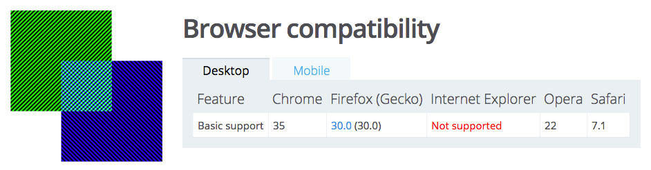
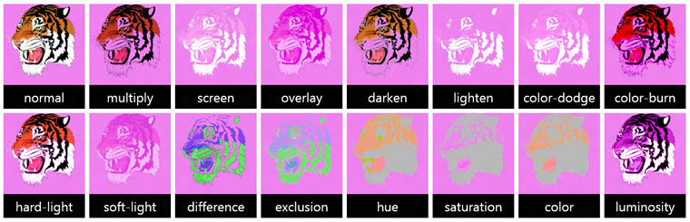
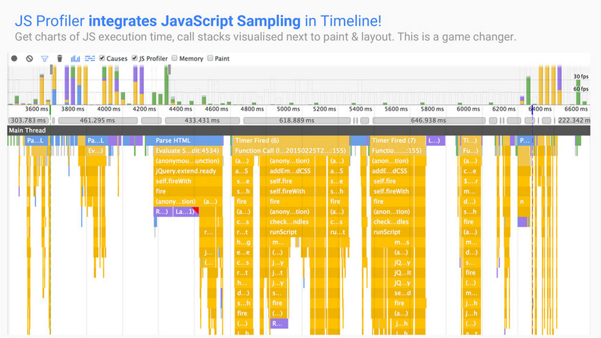
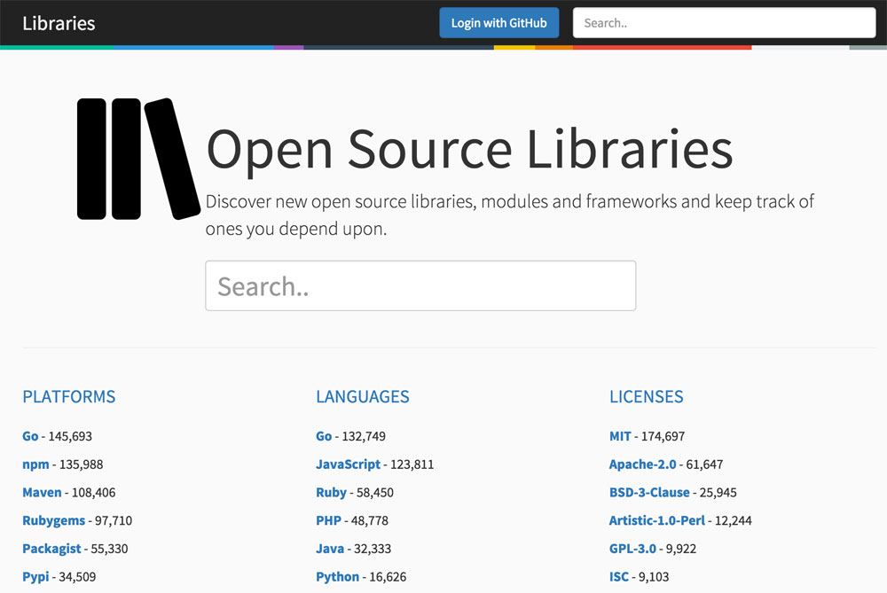
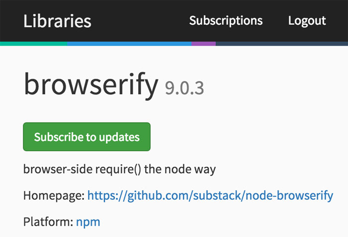
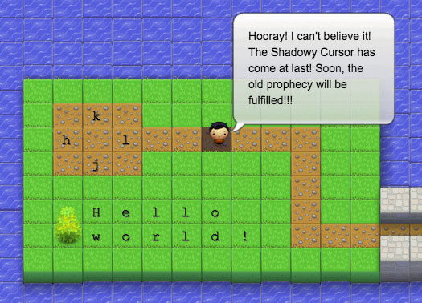
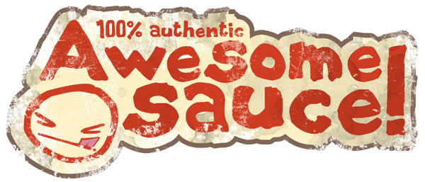
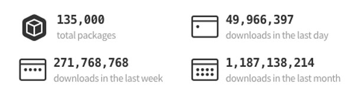
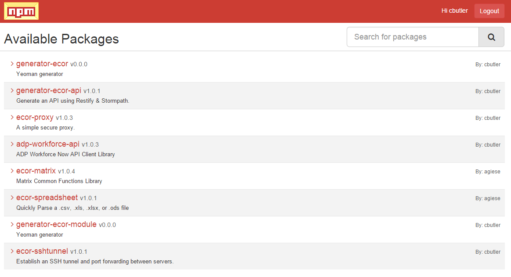

Thanks to our sponsors:

— Brian Moeskau (@bmoeskau)
http://edgeATX.github.io/slides
— Corey Butler (@goldglovecb)
Thanks to our sponsors:
Last version check — February 2015:
 |
 |
 |
 |
 |
 |
| 40 | 36 | 27 | 8 | 11 | 0 |
As of March 25, 2015:
|
|
|
|
|
|
| 40 41 |
36 | 27 28 |
8 | 11 | 0 |
Shipping next week
As usual, lots of new ES6 features
Details next month... ;)
Based on Chrome 41
Not much else to talk about from a dev perspective
Security updates
|
|
Announced Jan 21 – will ship with Windows 10
See our slides from last month for details
One small, but hopeful, example...
background-blend-mode is well supported, with one exception:
Microsoft on Monday announced a code contribution from Adobe!
Adobe’s Web Platform Team provided its first contribution in the latest build of Windows 10, supplying a feature for CSS gradient midpoints. It allows developers to choose a location between color stops of a CSS gradient and is specified in the CSS images draft... [providing] full support for blend modes.
ES6 === EcmaScript v6 === ES.next === Ecma-262 Edition 6
Next generation of JavaScript (available now)
Any day now...
Not actually a W3C spec (it's a WHATWG spec)
Aims to improve on the age-old XMLHttpRequest (Ajax) API
fetch("/data.json").then(function (response) {
if (response.ok) {
res.json().then(function (data) {
// use the data!
});
}
else {
console.log("Response is bad", res.status);
}
},
function (err) {
console.log("Fetch failed!", err);
});Currently available in FF 39 (nightly) and Chrome 42 (canary).
Github also provides a polyfill.
Yet another example of why ES6 is so important today!
By Addy Osmani, Google Platform Engineer
Tons of performance-related dev tools tips
Search
But the most useful feature...
Subscribe to receive updates when packages change!
Help Bitovi (makers of CanJS, jQuery++, etc.) test the CanJS docs
March 26 (tomorrow), times flexible
A "few hours" of your time, plus get paid!
Learning VIM while playing a game
$25 / 6 months access to all levels
Simplify the development of applications and tooling
* Note that there is no specification of "Node.js" or "JavaScript". Npm is everywhere.
Here are a few stats:
That's nearly 1.2 billion packages downloaded.
Last month.

Only required if you plan to publish a module
Research → Build → Test → Publish → Announce
Announce? No fear!
Also...
They are real!
It's an evolving ecosystem
npm i mymodule // npm install mymodule
npm i mymodule -S // npm install mymodule --save
npm link // Link to a global module
npm update npm // Upgrade your npm installation
package.json:
"scripts": {
"start": "node --harmony index.js",
"test": "mocha test"
}
CLI:
npm test
npm start
/
#